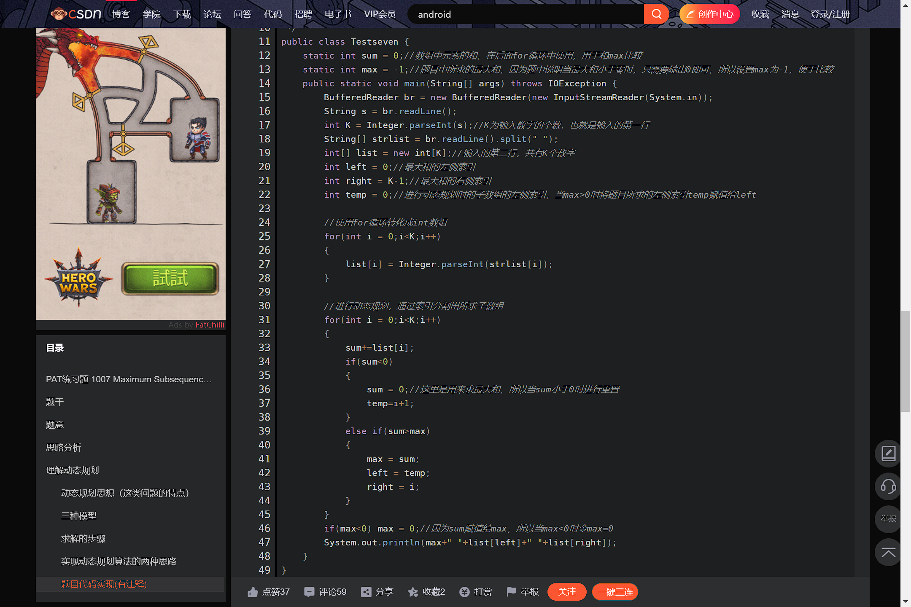

Dynamic Programming
Theory:
-
If the optimal solution of the problem can be derived from the optimal solution of the subproblem, the optimal solution of the subproblem can be solved first, and the optimal solution of the original problem can be constructed. If more subproblems are repeated, the final subproblems can be solved step by step from bottom to top.
-
In this example, let's take a classic problem in dynamic programming: the maximum path problem.
Code (Java):

Emphasis in dynamic programming:
- Analyze the structure of the optimal solution
- Recursively define the cost of the optimal solution
- The cost of the optimal solution is calculated from bottom to top, and the information of constructing the optimal solution is obtained
- The optimal solution is constructed according to the information of the optimal solution
Tips:
- Divide the original problem into a series of sub-problems
- Solve each sub-problem only once, and save the result in a table, then use direct access, no double calculation, save the calculation time
- You do it from the bottom up
- The optimal solution of the global problem depends on the optimal solution of the subproblem (the state transfer equation) (the subproblem is called the state, and the solution of the final state is reduced to the solution of other states).
Usage scenarios for dynamic programming:
- Optimal substructure: A problem is said to have an optimal substructure if the optimal solution contains the optimal solution to the subproblem.
- No aftereffect: Once a state is determined, it is not affected by subsequent decisions of that state.
- Overlapping subproblems: subproblems are not independent of each other, and a subproblem may be used multiple times in the next phase of the decision.
{% if posts %}
Comment Area:
{% for post in posts %}
{{ post.author_id }}
{{ post.create_date }}
{{ post.comment }}
{% endfor %}
{% else %}
No post here. You can publish one first.
{% endif %}